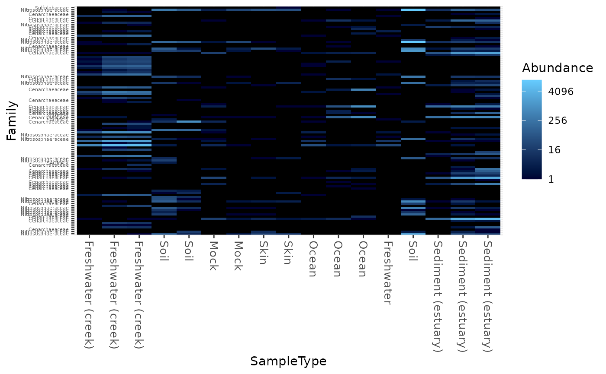
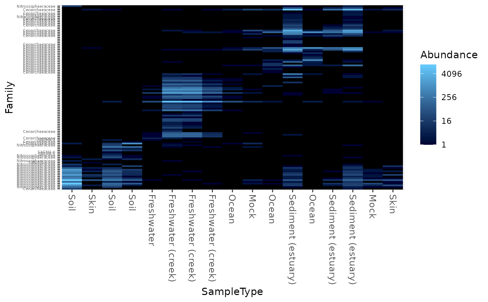
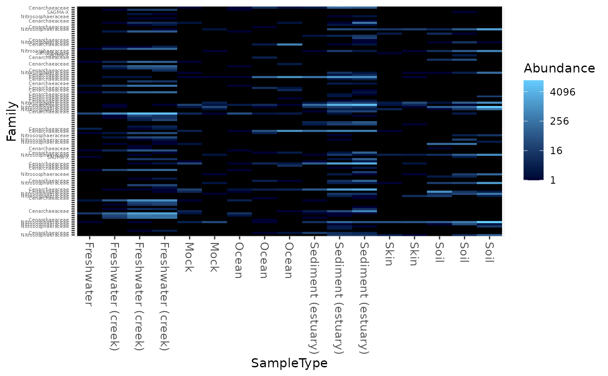

Create an ecologically-organized heatmap using ggplot2 graphics
Source:R/plot-methods.R
plot_heatmap.RdThere are many useful examples of phyloseq heatmap graphics in the
phyloseq online tutorials.
In a 2010 article in BMC Genomics, Rajaram and Oono show describe an
approach to creating a heatmap using ordination methods to organize the
rows and columns instead of (hierarchical) cluster analysis. In many cases
the ordination-based ordering does a much better job than h-clustering.
An immediately useful example of their approach is provided in the NeatMap
package for R. The NeatMap package can be used directly on the abundance
table (otu_table-class) of phylogenetic-sequencing data, but
the NMDS or PCA ordination options that it supports are not based on ecological
distances. To fill this void, phyloseq provides the plot_heatmap()
function as an ecology-oriented variant of the NeatMap approach to organizing
a heatmap and build it using ggplot2 graphics tools.
The distance and method arguments are the same as for the
plot_ordination function, and support large number of
distances and ordination methods, respectively, with a strong leaning toward
ecology.
This function also provides the options to re-label the OTU and sample
axis-ticks with a taxonomic name and/or sample variable, respectively,
in the hope that this might hasten your interpretation of the patterns
(See the sample.label and taxa.label documentation, below).
Note that this function makes no attempt to overlay hierarchical
clustering trees on the axes, as hierarchical clustering is not used to
organize the plot. Also note that each re-ordered axis repeats at the edge,
and so apparent clusters at the far right/left or top/bottom of the
heat-map may actually be the same. For now, the placement of this edge
can be considered arbitrary, so beware of this artifact of this graphical
representation. If you benefit from this phyloseq-specific implementation
of the NeatMap approach, please cite both our packages/articles.
plot_heatmap( physeq, method = "NMDS", distance = "bray", sample.label = NULL, taxa.label = NULL, low = "#000033", high = "#66CCFF", na.value = "black", trans = log_trans(4), max.label = 250, title = NULL, sample.order = NULL, taxa.order = NULL, first.sample = NULL, first.taxa = NULL, ... )
Arguments
| physeq | (Required). The data, in the form of an instance of the
|
|---|---|
| method | (Optional). The ordination method to use for organizing the heatmap. A great deal of the usefulness of a heatmap graphic depends upon the way in which the rows and columns are ordered. |
| distance | (Optional). A character string.
The ecological distance method to use in the ordination.
See |
| sample.label | (Optional). A character string. The sample variable by which you want to re-label the sample (horizontal) axis. |
| taxa.label | (Optional). A character string.
The name of the taxonomic rank by which you want to
re-label the taxa/species/OTU (vertical) axis.
You can see available options in your data using
|
| low | (Optional). A character string. An R color.
See |
| high | (Optional). A character string. An R color.
See |
| na.value | (Optional). A character string. An R color.
See |
| trans | (Optional). |
| max.label | (Optional). Integer. Default is 250. The maximum number of labeles to fit on a given axis (either x or y). If number of taxa or samples exceeds this value, the corresponding axis will be stripped of any labels. This supercedes any arguments provided to
|
| title | (Optional). Default |
| sample.order | (Optional). Default |
| taxa.order | (Optional). Default |
| first.sample | (Optional). Default |
| first.taxa | (Optional). Default |
| ... | (Optional). Additional parameters passed to |
Value
A heatmap plot, in the form of a ggplot2 plot object,
which can be further saved and modified.
Details
This approach borrows heavily from the heatmap1 function in the
NeatMap package. Highly recommended, and we are grateful for their
package and ideas, which we have adapted for our specific purposes here,
but did not use an explicit dependency. At the time of the first version
of this implementation, the NeatMap package depends on the rgl-package,
which is not needed in phyloseq, at present. Although likely a transient
issue, the rgl-package has some known installation issues that have further
influenced to avoid making NeatMap a formal dependency (Although we love
both NeatMap and rgl!).
References
Because this function relies so heavily in principle, and in code, on some of the functionality in NeatMap, please site their article if you use this function in your work.
Rajaram, S., & Oono, Y. (2010). NeatMap--non-clustering heat map alternatives in R. BMC Bioinformatics, 11, 45.
Please see further examples in the phyloseq online tutorials.
Examples
data("GlobalPatterns") gpac <- subset_taxa(GlobalPatterns, Phylum=="Crenarchaeota") # FYI, the base-R function uses a non-ecological ordering scheme, # but does add potentially useful hclust dendrogram to the sides... gpac <- subset_taxa(GlobalPatterns, Phylum=="Crenarchaeota") # Remove the nearly-empty samples (e.g. 10 reads or less) gpac = prune_samples(sample_sums(gpac) > 50, gpac) # Arbitrary order if method set to NULL plot_heatmap(gpac, method=NULL, sample.label="SampleType", taxa.label="Family")#> Warning: Transformation introduced infinite values in discrete y-axis# Use ordination plot_heatmap(gpac, sample.label="SampleType", taxa.label="Family")#> Warning: Transformation introduced infinite values in discrete y-axis# Use ordination for OTUs, but not sample-order plot_heatmap(gpac, sample.label="SampleType", taxa.label="Family", sample.order="SampleType")#> Warning: Transformation introduced infinite values in discrete y-axis# Specifying both orders omits any attempt to use ordination. The following # should be the same. p0 = plot_heatmap(gpac, sample.label="SampleType", taxa.label="Family", taxa.order="Phylum", sample.order="SampleType") p1 = plot_heatmap(gpac, method=NULL, sample.label="SampleType", taxa.label="Family", taxa.order="Phylum", sample.order="SampleType") #expect_equivalent(p0, p1) # Example: Order matters. Random ordering of OTU indices is difficult to # interpret, even with structured sample order rando = sample(taxa_names(gpac), size=ntaxa(gpac), replace=FALSE) plot_heatmap(gpac, method=NULL, sample.label="SampleType", taxa.label="Family", taxa.order=rando, sample.order="SampleType")#> Warning: Transformation introduced infinite values in discrete y-axis# # Select the edges of each axis. # First, arbitrary edge, ordering plot_heatmap(gpac, method=NULL)#> Warning: Transformation introduced infinite values in discrete y-axis# Second, biological-ordering (instead of default ordination-ordering), but # arbitrary edge plot_heatmap(gpac, taxa.order="Family", sample.order="SampleType")#> Warning: Transformation introduced infinite values in discrete y-axis# Third, biological ordering, selected edges plot_heatmap(gpac, taxa.order="Family", sample.order="SampleType", first.taxa="546313", first.sample="NP2")#> Warning: Transformation introduced infinite values in discrete y-axis# Fourth, add meaningful labels plot_heatmap(gpac, sample.label="SampleType", taxa.label="Family", taxa.order="Family", sample.order="SampleType", first.taxa="546313", first.sample="NP2")#> Warning: Transformation introduced infinite values in discrete y-axis